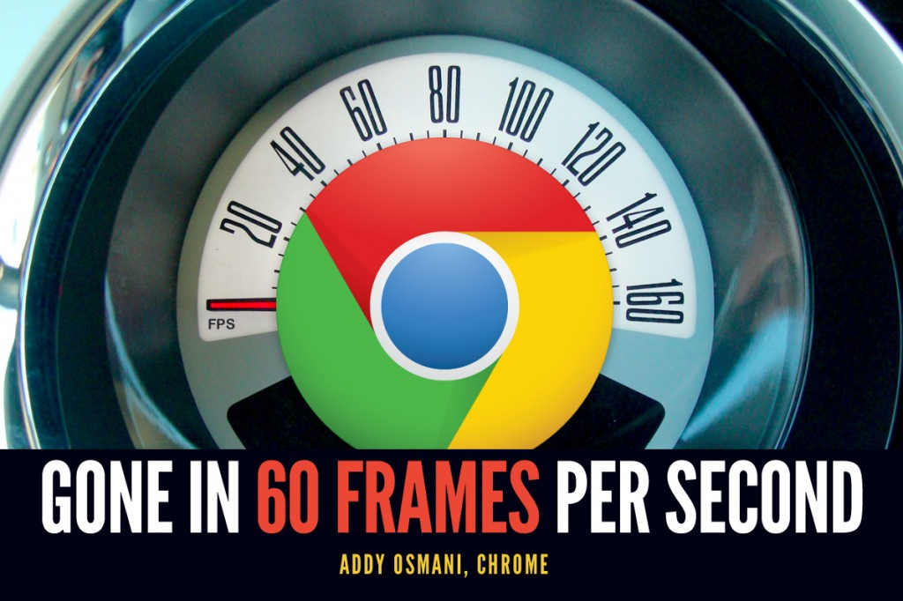
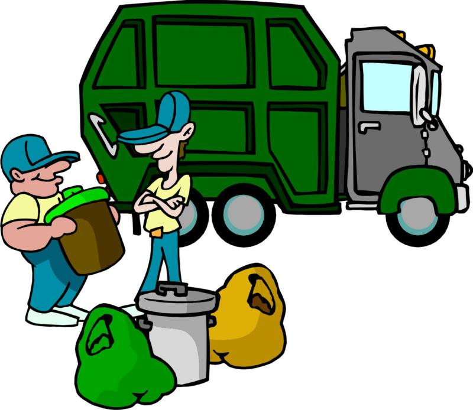

Create games using HTML5
Created by Aaron McLeod
Twitter: @agmcleod
http://agmprojects.com
Overview
- Benefits
- Downsides
- Canvas or WebGL?
- Tooling
- Getting started
Benefits

Downsides
Monetization
Users tend to play most web games for free.
Performance
Canvas or WebGL?
Performance differences between the two
Canvas WebGLSprite batching
Reasons to use the canvas
- Super easy drawing API
- Really easy to scale your drawings, and have it look amazing
- Better support across devices. As WebGL doesnt run in mobile safari
Benefits of WebGL
- Faster
- More advanced features
- GL SL
- Your best and almost only option for 3d
To Scale (canvas)
Up Scaled 4x (canvas)
Up Scaled 4x(WebGL)
Tooling
JS Performance
Aaron, make javascript go faster!
???
Be smart with your garbage collection
Apply traditional game dev optimizations
- Draw only what is on the screen
- Where possible, only update objects on the screen
- Limit your collision detection
ASM.js & Emscripten
Low Level Javascript
struct Point {
int x, y;
}
let Point p;
p.x = 10;
p.y = 50;
let Point *a = &p;
a->p.x = 20;
My thoughts on Emscripten
Cocoon JS
Features
- Device Motion
- Supports Controller/Gamepad API
- Ads
- InApp Purchases
Engines
- Phaser - Canvas & WebGL
- Turbulenz - Canvas & WebGL
- MelonJS
- Animation Support
- Object pooling
- Physics & Math support
- Texture packing
- Tiled map editor
- Screens/game states (Title screen, play screen, pause)
- Simplistic camera, can have it follow an entity as it moves around
- Spine (skeletal animation). Though the implementation is very early.
So how to get into games?
http://html5gameengines.com
Thanks!
Aaron McLeod
Twitter: @agmcleod
http://agmprojects.com